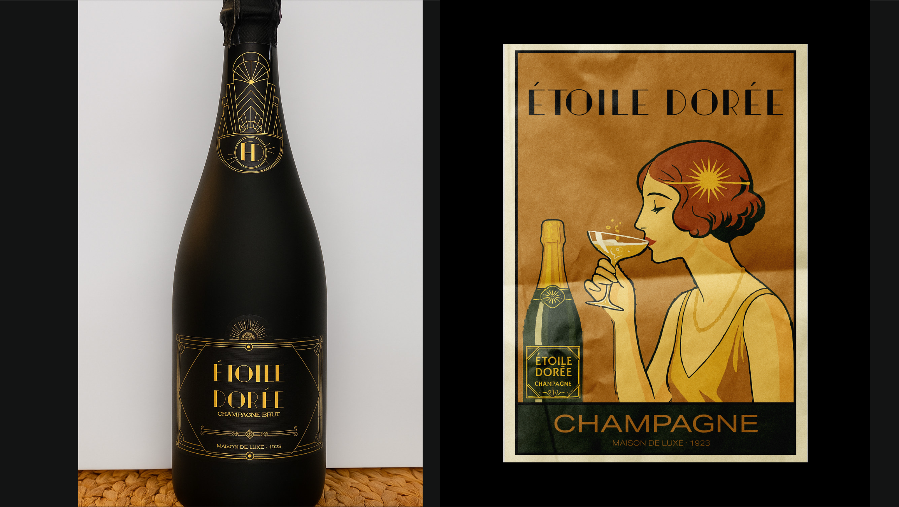
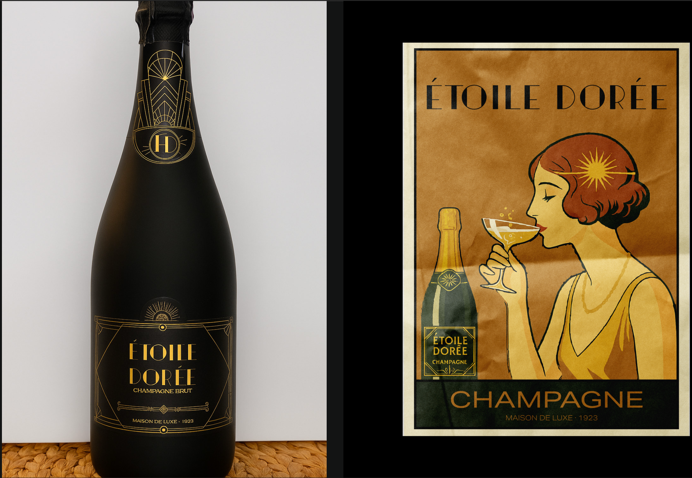
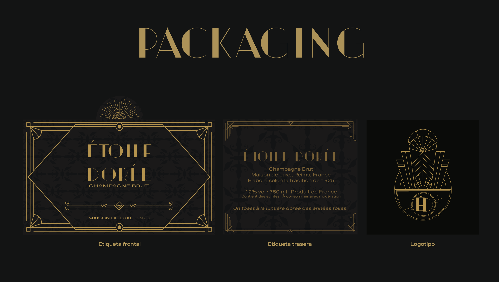
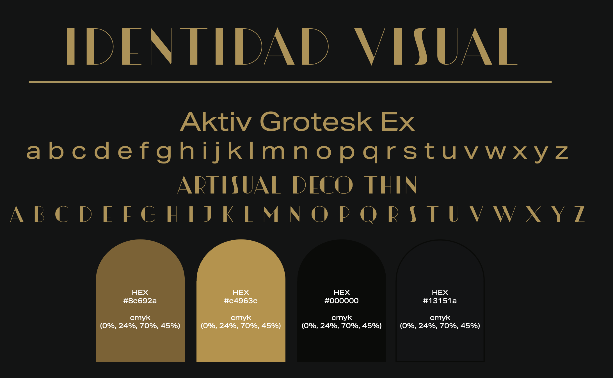
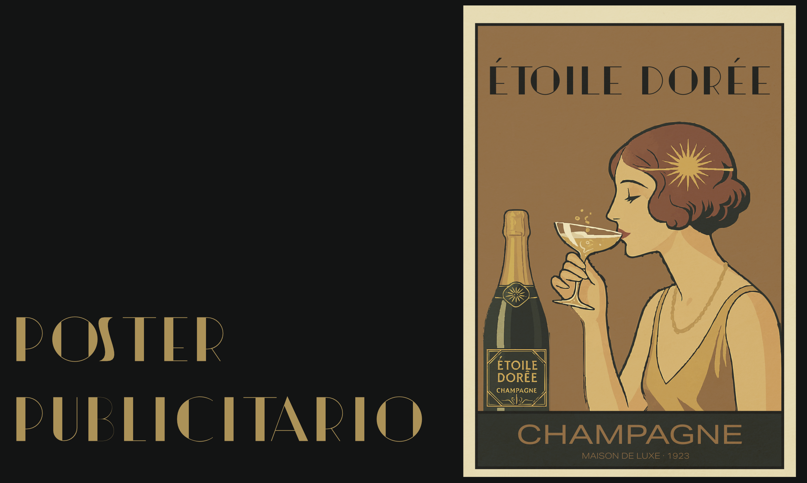

Packaging · Diseño gráfico
Vintage Packaging
Un diseño de packaging para champagne inspirado en el universo visual de The Great Gatsby y en la sofisticación geométrica del Art Déco.

Contexto
El proyecto propone un champagne ficticio diseñado para formar parte del universo visual de The Great Gatsby, ambientado durante la Era del Jazz.
El concepto de la estrella dorada funciona como metáfora de la luz, la ambición y la efervescencia de los sueños.
Proceso
La propuesta reinterpreta los códigos visuales del Art Déco mediante líneas geométricas, simetría, tonos dorados y una composición elegante.
El sistema incluye naming, logotipo, etiqueta frontal, etiqueta trasera, caja y cartel publicitario.
Resultado
El resultado es una identidad visual coherente con el lujo de los años veinte, reinterpretada desde una perspectiva gráfica contemporánea.
Galería





Ficha técnica
- Disciplina
- Packaging y diseño gráfico
- Inspiración
- Art Déco y The Great Gatsby
- Contexto
- Proyecto académico individual